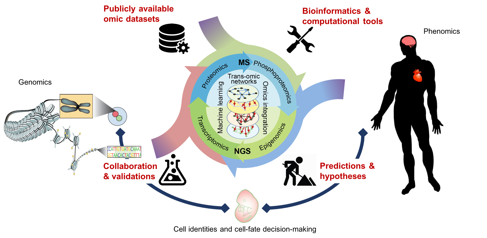

How do cells establish identities and make cell-fate decisions?
The computational trans-regulatory biology group led by Dr. Pengyi Yang
at Charles Perkins Centre (CPC), University of Sydney, focuses on
understanding the trans-omics networks that cut across signalling, transcriptional, translational and (epi)genomic
regulations in controlling cell identities and cell-fate decision-making.
Molecular trans-regulatory programs comprised of cell signalling, transcriptional, translational, and epigenomic networks are
central to health and disease. Computational approaches are instrumental in characterising trans-regulatory programs of cells
at the systems level.
Our research lies at the interface of bioinformatics and systems biology. We develop computational and statistical models
to reconstruct signalling cascades, epigenomics, transcriptional, and proteome networks, and
characterise their cross-talk and trans-regulations in various cellular processes and systems.
By integrating heterogeneous -omics data with the goal of generating testable hypotheses and predictions,
our research contributes to the comprehensive understanding of trans-omic networks that underlie cellular homeostasis,
proliferation, differentiation, and cell-fate decisions.

Our research focuses on developing machine learning algorithms and statistical models for